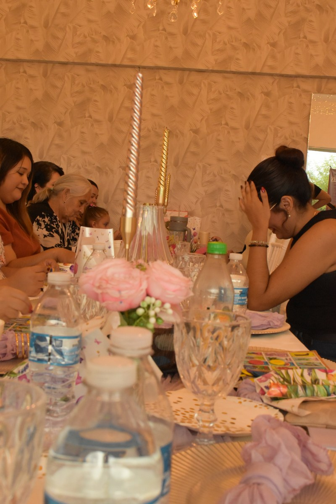
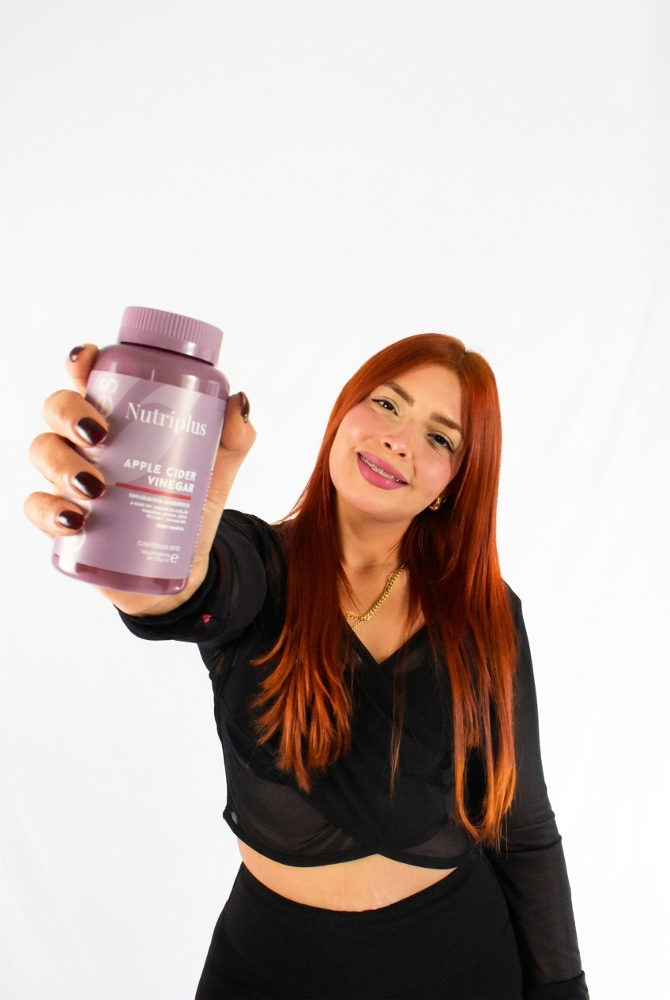

10:00 AM
PASO 01 // PLANTA BAJA
Mimosas & Firma
🥂 Bienvenida con copa en mano.
📝 Firma de contrato en 30 segs.
👑 Tu hermana de Hostess.
📝 Firma de contrato en 30 segs.
👑 Tu hermana de Hostess.

10:15 AM
PASO 02 // PLANTA ALTA
Doble Set de Fotos
⚡ Set Blanco: Sport & Nutriplus.
💎 Set Negro: Poses en Gran Mesa.
⏱️ 7 minutos exactos por chica.
💎 Set Negro: Poses en Gran Mesa.
⏱️ 7 minutos exactos por chica.

13:15 PM
PASO 03 // CICLORAMA
Foto Grupal & Brindis
📸 Foto de las 25 con copas arriba.
📲 Stories virales con @captoora.
✨ Clímax del evento.
📲 Stories virales con @captoora.
✨ Clímax del evento.

13:30 PM
PASO 04 // TESTIMONIOS
Ping-Pong de Videos
🎤 Micrófono de solapa y celular.
💬 4 preguntas rápidas (45 segs).
🚀 25 testimonios para 3 meses.
💬 4 preguntas rápidas (45 segs).
🚀 25 testimonios para 3 meses.